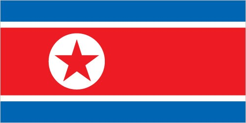
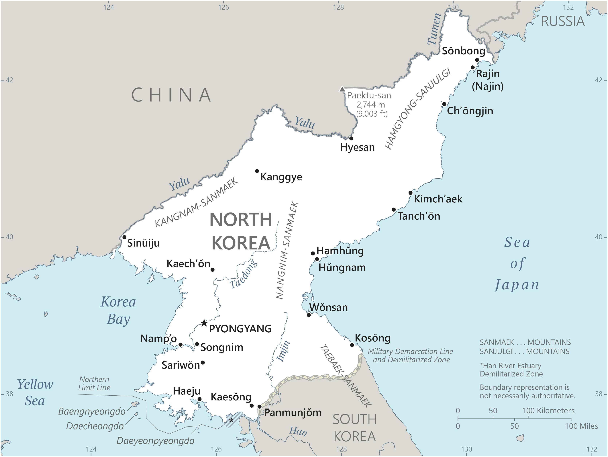

Three horizontal bands of blue (top), red (triple width), and blue; the red band is edged in white; on the hoist side of the red band is a white disk with a red five-pointed star; the broad red band symbolizes revolutionary traditions; the narrow white bands stand for purity, strength, and dignity; the blue bands signify sovereignty, peace, and friendship; the red star represents socialism
North Korea map showing major cities as well as parts of surrounding countries and water bodies.
The first recorded kingdom (Choson) on the Korean Peninsula dates from approximately 2300 B.C. Over the subsequent centuries, three main kingdoms -- Kogoryo, Paekche, and Silla -- were established on the Peninsula. By the 5th century A.D., Kogoryo emerged as the most powerful, with control over much of the Peninsula and part of Manchuria (modern-day northeast China). However, Silla allied with the Chinese to create the first unified Korean state in 688. Following the collapse of Silla in the 9th century, Korea was unified under the Koryo (Goryeo; 918-1392) and the Chosen (Joseon; 1392-1910) dynasties. Korea became the object of intense imperialistic rivalry among the Chinese (its traditional benefactor), Japanese, and Russian empires in the latter half of the 19th and early 20th centuries. After the Sino-Japanese War (1894-95) and the Russo-Japanese War (1904-05), Korea was occupied by Imperial Japan. In 1910, Japan formally annexed the entire peninsula. After World War II, the northern half came under Soviet-sponsored communist control.
In 1948, North Korea (formally known as the Democratic People's Republic of Korea or DPRK) was founded under President KIM Il Sung, who consolidated power and cemented autocratic one-party rule under the Korean Worker's Party (KWP). North Korea failed to conquer UN-backed South Korea (formally the Republic of Korea or ROK) during the Korean War (1950-53), after which a demilitarized zone separated the two Koreas. KIM's authoritarian rule included tight control over North Korean citizens and the demonization of the US as the central threat to North Korea's political and social system. In addition, he molded the country's economic, military, and political policies around the core objective of unifying Korea under Pyongyang's control. North Korea also declared a central ideology of juche ("self-reliance") as a check against outside influence, while continuing to rely heavily on China and the Soviet Union for economic support. KIM Il Sung's son, KIM Jong Il, was officially designated as his father's successor in 1980, and he assumed a growing political and managerial role until the elder KIM's death in 1994. Under KIM Jong Il's reign, North Korea continued developing nuclear weapons and ballistic missiles. KIM Jong Un was publicly unveiled as his father's successor in 2010. Following KIM Jong Il's death in 2011, KIM Jong Un quickly assumed power and has since occupied the regime's highest political and military posts.
After the end of Soviet aid in 1991, North Korea faced serious economic setbacks that exacerbated decades of economic mismanagement and resource misallocation. Since the mid-1990s, North Korea has faced chronic food shortages and economic stagnation. In recent years, the North's domestic agricultural production has improved but still falls far short of producing sufficient food for its population. Starting in 2002, North Korea began to tolerate semi-private markets but has made few other efforts to meet its goal of improving the overall standard of living. New economic development plans in the 2010s failed to meet government-mandated goals for key industrial sectors, food production, or overall economic performance. At the onset of the COVID-19 pandemic in 2020, North Korea instituted a nationwide lockdown that severely restricted its economy and international engagement. Since then, KIM has repeatedly expressed concerns with the regime's economic failures and food problems, but in 2021, he vowed to continue "self-reliant" policies and has reinvigorated his pursuit of greater regime control of the economy.
As of 2024, despite slowly renewing cross-border trade with China, North Korea remained one of the world's most isolated countries and one of Asia's poorest. In 2024, Pyongyang announced it was ending all economic cooperation with South Korea. The move followed earlier proclamations that it was scrapping a 2018 military pact with South Korea to de-escalate tensions along their militarized border, abandoning the country’s decades-long pursuit of peaceful unification with South Korea, and designating the South as North Korea’s “principal enemy.”